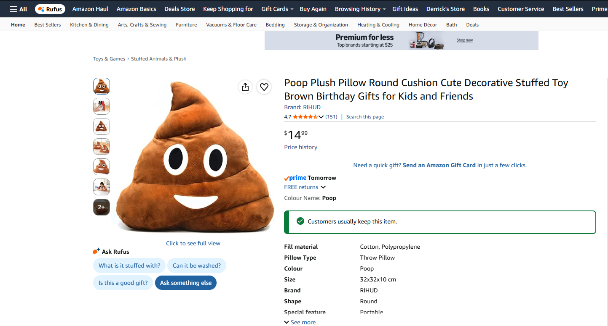
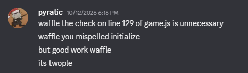

Hello Twople enjoyers, and welcome to our first ever TWIT (this week in Twople)! This week we will be going over the launch of our game, a few major milestones since then, as well as a sneak peak at what's next for Twople!
First things first...
Our game launched! Yes the news is true! As of October 12th, Twople 1.0 has officially released! Since then, we have made several major improvements along the way, such as unifying our display accross all devices (sorry mobile users!), and several other general UI improvements.
Twople x Amazon Collab
To celebrate the launch of our game, everyone at Twople Studios is so very proud to announce our collaboration with Amazon on official Twople merch!
Thats right! For just $14.99 CAD, the Twople pillow can be all yours!
A Quick Recap
For those of you who missed it, we are currently running on version 1.4 of Twople, with new bug fixes and improvements coming every day! Version 1.1 primarily focused on unifying our layout accross every type of display, with v1.2 and 1.3 being dedicated to fixing font display issues and issues with button spacing. Finally, v1.4 fixed a small logic bug if you were to successfully beat any of the levels.
What's Next?
While our offical Twople Roadmap™ is still far from a deliverable state, we wanted to share a small sneak peak about Twoples first major update, with an estimated release date of early 2027. For those of you out of the loop, Twople is "loosely" inspired by another online word ladder game, however this other game only let's you play once per day. So with our first major update, we will be adding a secret way to change Twople into an endless version of the game that inspired Twople!!!
Last But Certainly Not Least...

We just love community engagement...